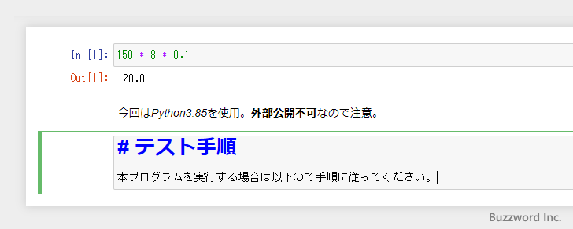
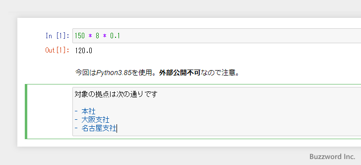

Markdownセルを使ってテキストを表示する
Jupyter Notebook のセルには Python のプログラムだけではなくテキストを表示することができます。テキストを表示するのに使うセルを Markdown セルと呼びます。テキストの他に Markdown 記法を使うことで見出しや箇条書きなどを表示することもできます。ここでは Jupyter Notebook で Markdown セルを使ってノートにテキストを表示する方法を解説します。
セルをMarkdownセルに変更する
ノートブックでセルが追加されると、デフォルトで Code セルとなります。 Code セルは Python のプログラムを実行するために使用するセルです。例えば次のようにプログラムを入力し、 [Shift]＋[Enter] を押すとプログラムが実行されて結果が表示されます。

それに対してテキストを表示するためのセルは Markdown セルといいます。現在選択しているセルを Core セルから Markdown セルに変更するには、ツールバーで「Code」表示されているドロップダウンメニューをクリックし「Markdown」を選択してください。
セルが Markdown セルに変更されました。
※ キーボードショートカットを使って Markdown セルに変更するには、コマンドモードで M キーを押してください。詳しくは「CodeセルとMarkdownセルを切り替える」を参照されてください。
セルにテキストを入力する
では簡単な例としてテキストを入力してみます。 Markdown セルに次のようにテキストを入力してから [Shift]＋[Enter] を押してください。
入力したテキストが表示されました。メモとして利用したり、プログラムに関する説明や補足事項などをプログラムといっしょに保存し共有する場合などに利用できます。
Markdownを使った見出しや箇条書きの記述
Markdown というのは文章の書き方のルールの一つです。 Markdown セルでは通常のテキストの他に Markdown を使った記述を行うことができます。例えば Markdown で箇条書きを表現するにはセルに次のように入力します。(改行は [Enter] キーで行います)。
- Python3.8.5を利用 - データ検証用 - 詳細は資料4.A参照
入力が終わりましたら [Shift]＋[Enter] を押してください。次のように箇条書きとして表示されます。
このように Markdown で定められている書き方を使うことで、単なるテキスト以外の文章を記述することができます。
それでは他の Markdown を使った書き方についていくつかご紹介します。(ここでご紹介できなかった部分については「Daring Fireball: Markdown Syntax Documentation」をご参照ください)。
強調と斜体
強調表示する場合は **文字列** のように ** で囲います。斜体表示する場合は *String* のように * で囲います。(斜体はアルファベットしか反映されません)。
今回は*Python3.85*を使用。**外部公開不可**なので注意。
強調表示は HTML の <strong> 、斜体は HTML の <em> に相当します。
見出し
見出しとして表示する場合は # 見出しのように # のあとにスペースを 1 つあけて見出しのテキストを記述します。 # を 1 つだけ記述した場合は <h1> に相当し、 ## のように 2 つ続けた場合は <h2> 、 ### のように 3つ続けた場合は <h3> に相当します。
# テスト手順
本プログラムを実行する場合は以下のて手順に従ってください。

箇条書きと番号付きリスト
箇条書きとして表示する場合は - のあとにスペース 1 つあけて項目のテキストを記述します。
対象の拠点は次の通りです - 本社 - 大阪支社 - 名古屋支社

箇条書きで階層をつけるには、 - の前にタブを入力するかスペースを 4 つ空けます。
対象の拠点は次の通りです
- 本社
- 支社
- 大阪支社
- 名古屋支社
番号付きリストとして表示する場合は数字のあとにドット( . )を記述し、そのあとスペースを 1 つ空けてから項目のテキストを記述します。
対象の拠点は次の通りです 1. 本社 2. 大阪支社 3. 名古屋支社
※ 1 番目に記述した数字から順番に番号が割り当てられます。 2 番目以降に記述した数値は何であっても結果は同じとなります。
番号付きリストで階層をつけるには、数字の前にタブを入力するかスペースを 4 つ空けます。
対象の拠点は次の通りです
1. 本社
2. 支社
1. 大阪支社
2. 名古屋支社

引用
引用を表示する場合はテキストの先頭に > を記述します。
> 経費の算出には事前に確認をお願いします。
-- --
Jupyter Notebook で Markdown セルを使ってノートにテキストを表示する方法を解説しました。
( Written by Tatsuo Ikura )

著者 / TATSUO IKURA
初心者～中級者の方を対象としたプログラミング方法や開発環境の構築の解説を行うサイトの運営を行っています。